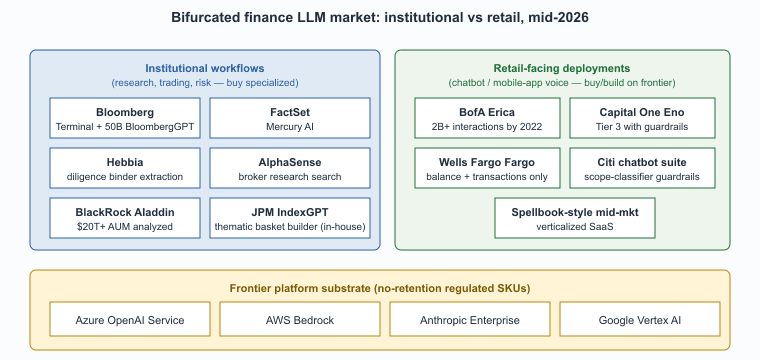

"BloombergGPT, FactSet Mercury, JPMorgan IndexGPT. The vendor list is a roadmap of which LLM bet which institution actually placed."
Frontier, Finance-Vendor-Watcher AI Agent
The vendor landscape for finance LLMs is dominated by a few categories: institutional terminal incumbents (Bloomberg, FactSet), specialized AI vendors who built finance-specific products (Hebbia, AlphaSense), in-house deployments at the major banks, and the broad-base frontier-model platforms (Azure OpenAI, AWS Bedrock, Anthropic, Google Cloud) underneath all of them. This closing section consolidates the vendor list, the cross-references inside this book, and the canonical regulatory sources.

Prerequisites
This is a vendors-and-further-reading section. It assumes familiarity with the earlier sections in Chapter 68 and the LLM-platform vocabulary from Section 14.1.
The 2026 Vendor Landscape
Bank of America's Erica chatbot launched in 2018 and crossed 1 billion interactions by 2022, years before the LLM era. The original Erica was a tightly scoped rule-based and intent-classification system; the 2024 upgrade added LLM features only after passing roughly 12,000 internal red-team test cases. The product's name comes from "AmErica", chopped down to fit a mobile-banking app button.
- Bloomberg Terminal AI and BloombergGPT. The terminal incumbent integrated a domain-pretrained LLM (50B parameters, 2023) into its workflow for news summarization, Q&A over the proprietary corpus, and analyst tools. The terminal remains the price umbrella under which most institutional AI features ship.
- FactSet Mercury AI. FactSet's AI assistant for buy-side and sell-side workflows, integrated across portfolio analytics, screening, and document search.
- Hebbia. Originally a financial-services search and structured-extraction product; differentiation is table construction and structured-extraction over diligence binders and analyst-report corpora.
- AlphaSense. Document search and AI assistant for buy-side research and corporate intelligence; large corpus of broker research, transcripts, and corporate filings.
- JPMorgan IndexGPT. Internal narrow LLM for thematic-basket construction; the canonical example of a major bank deploying a focused in-house model rather than a generalist tool.
- BlackRock Aladdin AI features. The dominant institutional risk and portfolio platform, with LLM features integrated across portfolio commentary and natural-language queries.
- Bank-specific assistants. Bank of America Erica, Capital One Eno, Wells Fargo Fargo, Citi's customer-facing chatbot suite. Each is a Tier 3 deployment with heavy scope controls, accumulated over multiple LLM-and-pre-LLM generations.
- Platform substrate. Azure OpenAI Service (the most-cited regulated-tier path), AWS Bedrock, Anthropic Enterprise, Google Vertex AI. All offer financial-services-targeted SKUs with no-retention contractual terms and audit-log support.
The finance LLM market in 2026 is bifurcated by deployment tier. Institutional workflows (research, trading, risk) buy specialized vendors (Bloomberg, FactSet, Hebbia, AlphaSense) integrated with their existing terminal or research stack. Retail-facing deployments (chatbots, mobile-app voice) buy or build on top of the frontier platforms (Azure OpenAI, AWS Bedrock, Anthropic). Mid-market firms increasingly buy verticalized SaaS (FactSet Mercury for research, Spellbook-style tools for contracts). The build-vs-buy decision turns on scale and on whether the data sensitivity makes in-house infrastructure mandatory; most firms below the largest banks are net buyers.
Cross-References Inside This Book
- Section 68.1 (LLMs in Finance & Trading), the focused production-pattern section in this chapter.
- Chapter 53 (Regulation, Compliance, and Governance), broader regulatory context.
- Chapter 67 (LLM Strategy & Use Case Prioritization), build vs. buy and unit economics.
- Chapter 67 (Legal), the parallel verified-architecture pattern.
- Chapter 49 (Agent Safety & Production), the broader framework for guard-railed LLM systems.
Canonical External References
- Federal Reserve SR 11-7, the original U.S. model-risk-management guidance that bank examiners apply to LLM deployments.
- EU Digital Operational Resilience Act (DORA), the operational-resilience regime that now treats frontier-LLM providers as critical third parties.
- SEC proposed rule on conflicts of interest in predictive data analytics for investment advisers, the U.S. securities regulator's key proposal touching AI use in advisory services.
- FINRA Regulatory Notices index, including 2024 notices on supervision of generative-AI-augmented client communications.
Research Frontier: Where Finance LLMs Are Heading
Finance-LLM research is sharply focused on numerical fidelity (does the model emit a correct number traceable to a primary source?) and on temporal calibration (does the model know what it does not yet know about a market-moving event?). Three threads dominate the 2024 to 2026 literature.
FinBen and FinanceBench (Islam et al., 2023, arXiv:2311.11944) provide the canonical evaluation set for analyst-grade question answering over 10-Ks, 10-Qs, and earnings transcripts; the headline result, even Claude 3.5 Sonnet answered fewer than 81 percent of FinanceBench questions correctly without retrieval, motivates the verified-RAG architecture that is now the production default. FinGPT (Liu et al., 2023, arXiv:2306.06031) and FinMA-7B (Xie et al., 2023) demonstrated that open-source finance pretraining is now competitive with proprietary BloombergGPT on several public benchmarks, opening a path for non-Bloomberg deployments.
The agent-side frontier is FinAgent (Zhang et al., 2024, arXiv:2402.18485) and the broader literature on multi-step trading-decision agents, plus StockGPT (Mai, 2024) on direct return prediction. SEC EDGAR's structured XBRL filings are also increasingly used as a grounding source for retrieval, replacing the older PDF-only extraction pipelines.
Where this is going: agent-augmented analyst workstations with explicit numerical verifiers, real-time RAG over filings and news with temporal cutoffs that survive backtesting, and tighter integration with risk-management telemetry under SR 11-7 model-risk governance. The open research question is how to make LLM-driven trading signals auditable enough to pass an SEC inspection or a model-risk committee, which is the bottleneck preventing many investment-decision use cases from moving past prototype.
Objective
Build a retrieval-augmented question-answer pipeline that answers analyst-grade questions over SEC 10-K filings using GPT-4o, then evaluate it with Ragas on FinanceBench's open subset. The goal is to produce the same kind of numerical-fidelity scorecard that an internal model-risk committee under SR 11-7 would expect to see before approving an analyst tool.
Setup
You need an OpenAI API key, the FinanceBench open subset (Islam et al., 2023, 150 question-answer pairs from large-cap 10-Ks hosted at github.com/patronus-ai/financebench), and Ragas for evaluation.
pip install openai ragas datasets langchain-community pypdf chromadbSteps
- Download the 50 FinanceBench filings and extract text from each PDF. Chunk at the section boundary that SEC filings already provide (Item 1, Item 1A risk factors, Item 7 MD&A, Item 8 financial statements). Store with metadata: ticker, fiscal year, item number.
- Build a Chroma index with OpenAI's
text-embedding-3-largeembeddings, and write a top-5 retrieval step that prepends the retrieved chunks to a GPT-4o prompt that returns a structured answer plus the source chunk IDs. - Run the pipeline on FinanceBench's open subset. Each question is paired with a gold answer and the gold source page; both are needed for the Ragas scorers.
- Score with Ragas using
answer_correctness,faithfulness, andcontext_precision. The first measures whether the number is right; the second measures whether the model's claim is grounded in the retrieved chunks; the third measures whether the retriever actually got the right page. - Slice the failures by question type. FinanceBench tags each question as either a fact lookup, a multi-step calculation, or a comparison across years. Numerical-fidelity gaps almost always concentrate in the multi-step calculation slice; that is the slice an SR 11-7 reviewer will ask about.
Expected Output
A Ragas score report with the three metrics aggregated overall and broken out by question type, plus a CSV of per-question results. With a vanilla retrieval setup, GPT-4o typically scores above 0.80 on answer_correctness for fact-lookup questions but below 0.55 on multi-step calculations, which is exactly the gap that the verified-numerical-reasoning research in this chapter's frontier section is targeting.
Extension
Add a Code Interpreter calculation step for multi-step questions and re-score; the typical lift is 15 to 25 points of answer_correctness on the calculation slice, which is the difference between "this pipeline ships" and "the model-risk committee blocks it."
What Comes Next
Chapter 68 ends here. Section 68.1 is a longer companion piece covering production trading-focused patterns. Chapter 69 on healthcare turns to the parallel industry where regulatory friction is equally intense and the failure-mode catalog (clinical decision support, HIPAA, FDA SaMD) requires a different but structurally similar response.
What's Next?
In the next chapter, Chapter 69: Use Cases That Actually Work in Healthcare, we continue building on the material from this chapter.